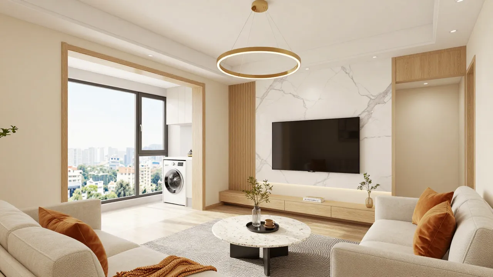
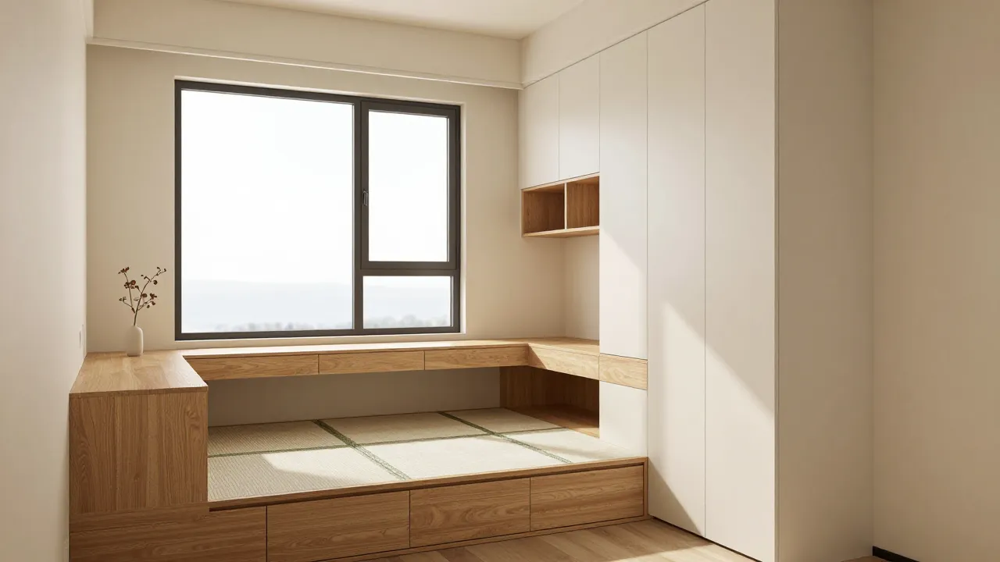
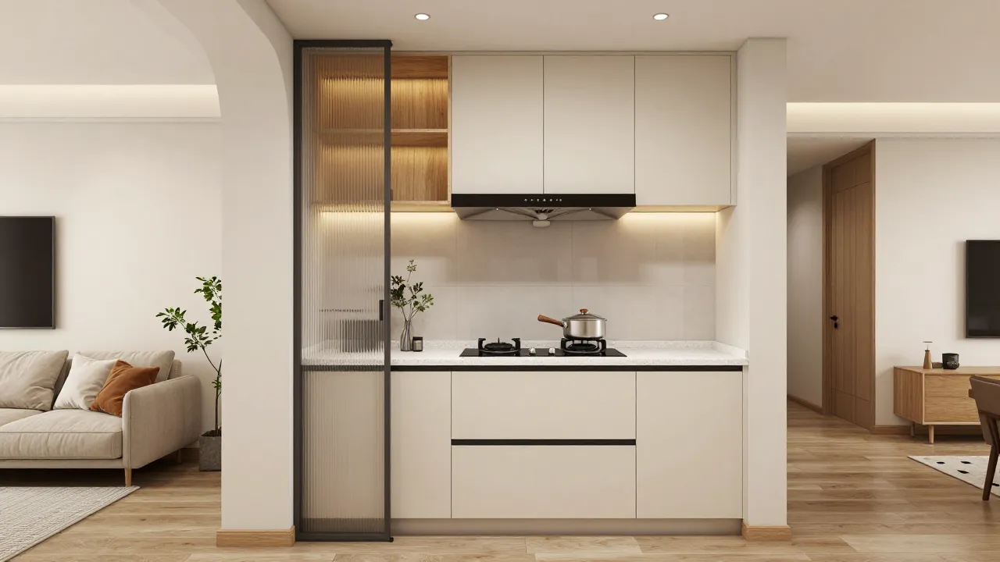

由 AI 依据户型图与需求文档产出 · 2026-08-16 · 用于与设计师/家人沟通；施工级 CAD 图纸仍需人类设计师出图签字
| 输入条件 | 内容 | 状态 |
|---|---|---|
| 套内面积 / 户型 | 41.5㎡ · 两室一厅一厨一卫 + 南阳台 | ✅ verified（户型图量取） |
| 居住者 | 2 人常住 · 备孕（次卧两阶段：书房→婴儿房） | ✅ user-confirmed |
| 核心生活需求 | 中式爆炒 · 衣服多 · 居家办公 · 玄关收纳 | ✅ user-confirmed |
| 朝向 / 采光 | 南北通透，主卧与阳台朝南 | ◐ inferred（依窗位推断，未见指南针） |
| 承重墙位置 | 厨房改吊轨移门涉及墙体 | ⚠️ assumed（待物业指认） |
| 层高 / 梁位 / 管井 | 影响通顶柜与吊轨可行性 | ❌ missing（量房补录） |
| 预算区间 | 硬装 / 主材 / 家电分配 | ❌ missing（待补，影响材质档位） |
标 assumed / missing 的条目 = 本方案的「待确认项」。量房或与设计师沟通后逐项替换为 verified，再深化方案——不在假数据上继续推进。
| 诊断 | 结论 |
|---|---|
| 动静分区 | ✅ 南静北动天然成立：两卧远离厨卫噪音源；次卧紧邻入户，做书房受影响最小 |
| 干湿分区 | ✅ 厨卫集中北侧，管线集中省改造费；⚠️ 卫生间 2.8㎡ 无法三分离，用浴帘+挡水条软分区 |
| 动线 | ✅ 入户→玄关柜→客厅 3 步；家务动线（厨→餐→阳台洗晒）单侧展开无交叉；⚠️ 原户型无玄关 → 方案补 280mm 薄柜 |
| 核心矛盾 | 41.5㎡ 要装下玄关收纳+餐区+办公位+未来婴儿房 → 每㎡ 必须复用（餐边柜嵌冰箱、榻榻米两阶段） |
| 功能单元 | 位置 | 家具与尺寸 | 与需求的关系 |
|---|---|---|---|
| 玄关 | 入户门左手墙 | 280mm 深通顶薄柜×1.2m，底部悬空 350mm | 回应「玄关鞋帽收纳」：约 20+ 双鞋 + 挂衣区 |
| 餐区 | 客厅北墙（厨房外） | 餐边柜 1.5m（嵌冰箱+小家电位）+ ø900 圆桌 | 回应「厨房小家电收纳」；离厨房 1 步，出菜最短 |
| 会客区 | 客厅西侧 | 2.4m 布艺沙发 + 电视柜；沙发两侧预留插座 | 投影/观影可后置在电视墙实现 |
| 烹饪 | 北侧厨房 | 一字橱柜 2.6 延米；平开门改吊轨移门 | 回应「中式爆炒」：保留封闭 + 大吸力烟机 |
| 睡眠(主) | 南侧主卧 | 1.5m 床 + 2.4m×600 通顶衣柜 | 回应「衣服多」（主力收纳，次卧吊柜补充） |
| 办公+客卧→婴儿房 | 北侧次卧 | 1.2m 榻榻米（箱体储物）+ 窗下书桌 + 通顶吊柜 | 回应「居家办公+备孕」两阶段复用 |
| 洗晒 | 南阳台 | 洗烘套装 + 电动晾衣架 + 端头 400mm 高柜 | 家务动线末端；封窗后冬天也能用 |
| 常量 | 取值（写入每一张意向图提示词） |
|---|---|
| 风格定位 | 奶油原木——低饱和暖白 + 浅木色，小户型强调轻体量、通透感、收纳一体化 |
| 配色 | 主色：奶油白墙面柜体 · 辅助色：浅橡木饰面 · 点缀色：燕麦灰布艺 + 少量黑色五金 |
| 材质 | 奶油色哑光柜门 / 浅橡木地板 / 白色大理石纹岩板（电视墙·台面）/ 布艺软包 / 长虹玻璃（厨房移门） |
| 灯光 | 无主灯：线性灯带 + 防眩筒灯，3000K 暖白；办公位单独 4000K 补光 |
| 固定布局 | 家具位置以 ② 平面布置图为准：圆餐桌 ø900、1.5m 床、榻榻米+窗下书桌、阳台洗烘位 |
| 禁止项 | 深色重色墙 / 大面积镜面 / 复杂多层吊顶 / 过饱和撞色 / 网红拼贴感 / 改动②图家具布局 |
方法说明：常量块一次固化、每图复用，是三张意向图「像同一个家」的原因——比每次堆形容词稳定得多。

客厅+餐区 · 奶油原木 · 大理石电视墙 + 阳台洗烘位

次卧 · 榻榻米+窗下书桌+通顶柜（书房→婴儿房两阶段）

厨房 · 一字型奶油柜 + 玻璃移门（爆炒关门，平时通透）
⚠️ 如实说明：以上为 AI 生成的风格意向图（表达材质、配色、氛围方向），不是按本户型 1:1 建模的渲染图。与户型精确对应的效果图见酷家乐渲染版（工作台「效果图/3D」页已归档），两者配合使用：意向图定风格，酷家乐图定布局。
| 版本 | 修改规则 |
|---|---|
| v1（本版·基线） | 三张意向图 + ④ 常量块，已归档 |
| 后续修改 | 只下定向指令（如「客厅整体调亮一档，家具布局、材质、相机位置不变」「只把沙发换成燕麦灰三人位」），不整图重来；旧版保留，新版记 v2，可对比可回滚 |
配套文件：3d.html（网页 3D 白模，浏览器直接旋转查看）· 案例预演-小两居41m2.md（完整方案文本）